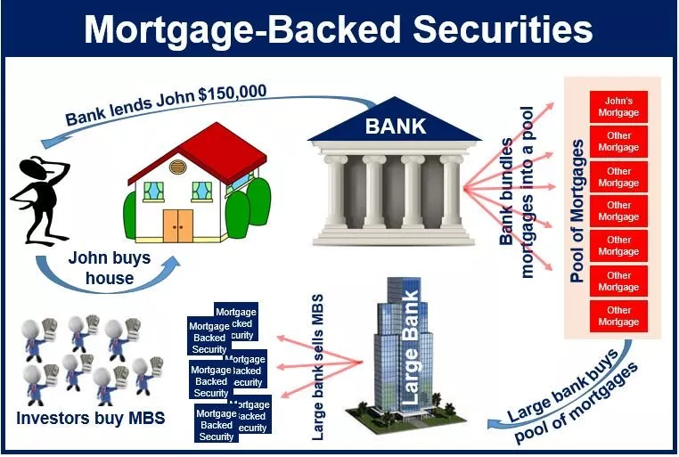
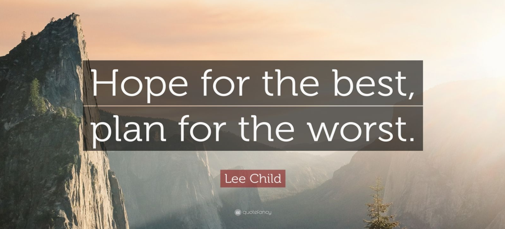
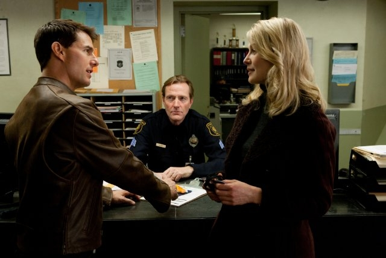

최고를 기대하되, 최악에 대비하라 - 미국 부동산 담보대출 사례
게시: 2020-04-01T06:30:42+09:00
요즘 코로나-19와 유가 때문에 세계 경제가 크게 요동치고 있습니다. 그로 인해 큰 손해를 보는 사람들도 있고, 용감하게 투자해서 큰 이윤을 남기는 사람도 있습니다. 이런 상황 속에서 지인 중 한 분이 '부동산 담보대출 금리는 어떻게 되는 것인가'를 물으셔서, 우리나라 부동산 관련 대출금리의 지표가 되는 COFIX 기준 금리와, 또 거기에 영향을 미치는 미국 국채 금리, 그리고 미국 30년짜리 부동산 담보 대출 금리 (30 year mortgage rate)를 요즘 주의깊게 보고 있습니다. 다행히 (적극적인 미국 재무부의 개입 덕분에 어떻게 보면 당연히) 대출 금리는 떨어지고 있습니다. 그런데 이런 와중에 저같은 경알못은 상상도 못했던 부분에서 문제가 생기더군요. 아래 기사에 따르면 부동산 담보대출 은행들을 구원하기 위해 시장에 개입한 연방준비 위원회(이하 연준) 때문에 오히려 부동산 담보대출 은행들이 곤경에 처했다고 합니다. https://finance.yahoo.com/news/mortgage-bankers-ask-sec-save-222840594.html 기사 내용을 요약하면 이렇습니다. 연준이 담보대출 시장의 붕괴를 막으려고 부동산 담보대출 연계증권(Mortgage-Backed Securities, 이하 MBS)을 잔뜩 사들여 금리를 끌어내렸습니다. 이건 부동산 담보대출 은행 연합(Mortgage Bankers Association, 이하 MBA)에서 원했던 것이었습니다. 그런데 대부분의 부동산 담보대출 은행에서는 그런 부동산 담보대출을 해줄 때, 그 결과로 생기는 MBS에 대해 쇼트 포지션(short position)을 가져갑니다. 즉, 자기가 만들어내는 MBS의 가격이 떨어질 경우에 자신이 돈을 버는, 일종의 공매도에 해당하는 파생상품을 샀다는 이야기입니다. 이건 일종의 위험 회피를 위한 분산 투자이자 안전장치입니다. 혹시라도, 부동산 시장에 뭔가 문제가 생겨서 MBS의 가치가 떨어지면 은행이 큰 손해를 보게 되므로, 그런 경우에도 피해를 줄일 수 있도록 일종의 보험을 들어두는 것이지요. 아주 젊고 건강한 사람이 의료보험에 드는 것과 동일한 것이라고 할 수 있습니다.

그런데 이번에 연준이 2008년 금융위기 때 투입한 액수의 몇 배에 해당하는 돈을 풀어 MBS를 사들이자, 당연히 MBS의 가격이 뛰었습니다. 그러자 안전장치로 걸어두었던 MBS에 대한 쇼트 파생상품에서 큰 문제가 생겼습니다. MBS 가격이 떨어지면 돈을 번다는 것은, MBS 가격이 오르면 손실이 난다는 것입니다. 그러므로 그런 파생상품을 판매한 금융사에서는 그런 손실로 인해 자신들까지 피해를 입을까봐, 그 파생상품을 샀던 부동산 담보대출 은행들에게 지금 당장 손해를 보고 쇼트 포지션 파생상품을 팔거나 아니면 증거금을 더 내놓으라고 요구하게 되었습니다. 그런 요구를 마진 콜(margin call)이라고 하는데, 그런 마진 콜이 엄청난 규모로 몰아닥치게 된 것입니다. 워낙 그 규모가 커서 일부 은행들이 파산할 위기에 놓일 지경이라고 합니다. 이로 인해서 부동산 담보대출 은행 연합에서는 당국에 추가로 MBS 매입하는 것을 줄여줄 것과, 또 금융기관들이 지나친 마진 콜을 하지 못하도록 개입해달라고 요청하고 있답니다.
결론적으로 그래서 부동산 담보대출 금리가 폭등할 것이냐 하면 그렇지는 않을 것 같습니다. 저 뉴스를 여기에 요약해서 적은 이유는, (이미 알고 계시는 분들도 많겠습니다만) 저렇게 상대적으로 안전한 부동산 담보대출에 대해서도 은행들은 이중삼중으로 저런 안전장치를 갖추고 있었다는 사실과, 그렇게 했음에도 이런 생각하지 못한 문제가 발생할 수 있다는 것을 여러분들께도 알려드리고 싶어서였습니다. 제이슨 본 시리즈 중 마지막 편인 Jason Bourne 중에 이런 장면이 나옵니다. CIA 간부들이 제이슨 본 (맷 데이먼)을 어떻게 처리해야 하는지를 두고 논의하는 자리에서 CIA 국장이 이런 말을 합니다. "Hope for the best, plan for the worst." (최고를 기대하되, 최악에 대비하라)

이건 알고 보면 일종의 경쟁 작품이라고 할 수 있는 Jack Reacher (톰 크루즈 주연으로 2편이 만들어졌지요) 원작 소설 시리즈의 작가인 리 차일드(Lee Child)가 한 말이라고 합니다. 리 차일드는 영국에서 TV 방송사 일을 하다가 40대에 실직을 했는데, 그때부터 먹고 살기 위해 소설을 쓰기 시작했습니다. 잭 리처라는 주인공 이름이 지어진 것도 그때의 추억이었습니다. 글을 막 쓰기 시작할 때, 그가 와이프와 함께 수퍼마켓에 갔다가 (아마 리 차일드의 키가 커서 그랬는지) 어떤 사람에게 높은 곳에 있는 물건을 대신 집어 내려준 일이 있었는데, 그때 와이프가 이렇게 말한 것을 기념해서 주인공 이름을 지었다고 하네요. "만약 소설 쓰는 것이 잘 안되더라도, 이렇게 수퍼마켓에서 높은 곳의 물건을 집어주는 사람(reacher)로 살 수는 있겠네." 리 차일드는 그렇게 어려운 시절을 겪어서 그랬는지, 저런 명언, 그러니까 '최고를 기대하되, 최악에 대비하라'는 말을 할 수 있었나 봅니다.

아마 남성분들은 대부분 어린이용 버전이더라도 손자병법을 읽어보셨을 것 같습니다. 손자병법에서 가장 유명한 구절은 지피지기 백전불태, 즉 '적을 알고 나를 알면 백번 싸워도 위태롭지 않다'라는 것이지요. 그러나 제 방어적인 성향 때문인지는 몰라도, 저 개인적으로는 고등학교 시절에 읽은 손자병법 중 아래 구절이 가장 인상 깊었고, 또 지금껏 살아오면서 제 삶에 가장 영향을 많이 준 구절이기도 합니다. "군대는 전진하기 전에 항상 퇴각로를 확보해야 한다." 지금 다시 손자병법을 뒤져보니, 우습게도 이런 말은 없더라고요. 아마 제가 읽은 문고본 손자병법의 해설 부분에 그런 말이 있었나 봅니다. 이 말이 항상 옳은 것은 아닙니다. High risk High return이라는 말은 Low risk Low return도 뜻합니다. 하지만 누구든 위험부담은 통제가능한 선에서 지도록 해야 합니다. 어떤 것이 통제가능한 선이냐고요 ? 저 개인적인 기준은 그렇습니다. 지켜야 할 가정이 있고 특히 그 가정에 아이가 있다면, 최악의 일이 벌어지더라도 가정과 아이의 일상에 피해가 가지 않는 것이 지켜야 할 선입니다. 절대 '에라 모르겠다'라는 심정으로는 어떤 일도 하지 마시기 바랍니다.